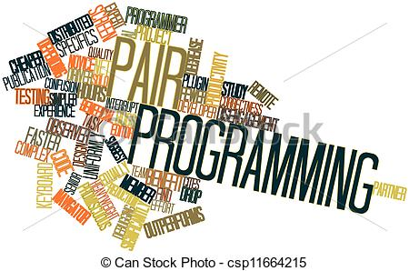
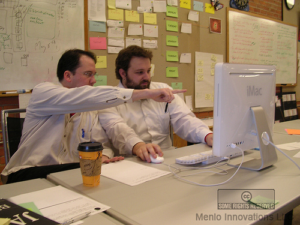
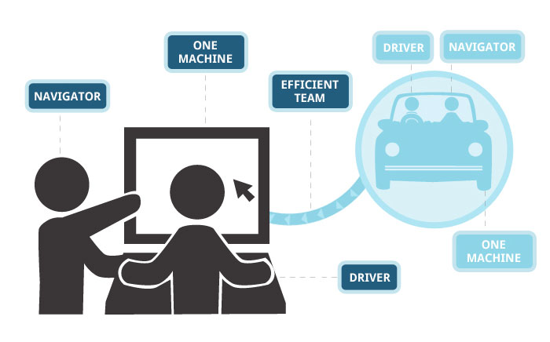
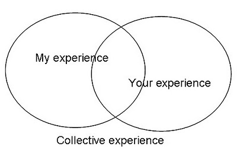
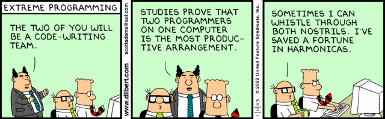
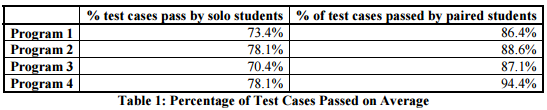
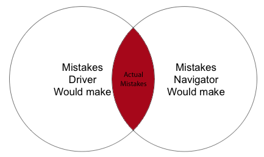
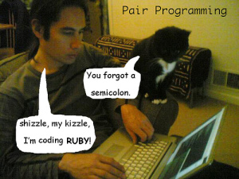
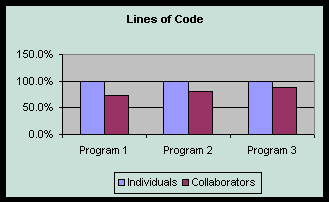

Pair Programming
Presented by Diana Southard
CSCI 5828, Presentation 2
Table of Contents
- Introduction
- Origins
- How It Works
- Guidelines
- Why It Works
- Potential Costs
- Expected Benefits
- Conclusion
- Sources
Introduction
Pair programming is where two programmers develop software side by side at one computer. While they are sitting together, they are continuously collaborating on the same design, problem, line of code, or test. This practice gained popularity due to its result in increased correctness in code (fewer faults per line of code than programming alone) as well as other results discussed in the benefits section of this presentation.

Origins
- 1953: From Fred Brooks ("The Mythical Man Month"/"No Silver Bullet"): “Fellow graduate student Bill Wright and I first tried pair programming when I was a grad student. We produced 1500 lines of defect-free code; it ran correctly first try.”
- 1992: "Dynamic Duo" is coined by Larry Constantine, reporting on a visit to a compiler vendor started by one of the implementers of C: "At each terminal were two programmers! Of course, only one programmer was actually cutting code at each keyboard, but the others were peering over their shoulders."
- 1993: "The benefits of collaboration for student programmers" by Wilson et al. is one early empirical study indicating benefits of pairing for programming tasks specifically. Posterior studies are more abundant and driven by the desire to "validate" pair programming after it had already gained popularity through Extreme Programming.
- 1995: The pattern "Developing in Pairs" is given a brief description, in Alexandrian pattern form, in Jim Coplien's chapter "A Generative Development-Process Pattern Language" from the first patterns book, "Pattern Languages of Program Design".
- 1996: Nissim Hadar was leading a team of programmers working on flight simulators who wanted to work in pairs. While it seemed inefficient at the beginning, big improvements came when the weaker programmers improved within a short time and there were fewer bugs in the fixed time scheduled for the project.
- 1998: In "Chrysler goes to Extremes", the earliest article about Extreme Programming, pair programming is presented as one of the core practices of the C3 team; it is later described formally as one of XP's original "twelve practices."
- 2000: The roles of Driver and Navigator are introduced to help explain pair programming.
- 2002: "Pair Programming Illuminated", by Laurie Williams and Robert Kessler, is the first book devoted exclusively to the practice and discusses its theory, practice and the various studies up to that date.
- 2003: An anonymous article on the C2 Wiki describes Ping-Pong Programming, a moderately popular variant which marries pairing with test-driven development.
.

How It Works
- While there are two people sitting at a single computer, only one person is actually typing at any one time.
- The programmer who is writing or typing is called the “driver” while the other programmer is called the “navigator.”
- While the driver types, the navigator observes: looking for tactical and strategic defects in the driver’s work.
- Tactical defects: syntax errors, typos, calling the wrong method.
- Strategic defects: when the driver’s implementation/design will ultimately fail to accomplish its goal.
Illustration of Driver and Navigator

- There should be a continuous conversation going on. The driver should be talking aloud about what he is thinking while typing and the navigator should be talking about the overall direction of the code.
- These roles switch periodically. Pair rotation is a common practice to keep pairs dynamic, rotating teams once or even several times per day rather than having assigned pairing partners for days or weeks at a time.
- Usually, programmers do not work in pairs the entire work day as extended sessions can be mentally exhausting due to the rapid pace of the work and the constant focus required on the task at hand. Instead, paired sessions can last between 1.5 - 4 hours a day.
Guidelines
A simple approach to the guidelines of pair programming was put forward by Robert Fulghum in his paper, “All I Really Need to Know About Pair Programming I Learned In Kindergarten.” These guidelines are:
Share everything, Play fair, Don’t hit people, Put things back where you found them, Clean up your own mess, Don’t take things that aren’t yours, Say you’re sorry when you hurt somebody, Wash your hands before you eat, Flush, Warm cookies and cold milk are good for you, Live a balanced life, Take a nap every afternoon, Hold hands and stick together, and Be aware of wonder.
Share Everything
While you are practicing pair programming, everything you are responsible for is shared jointly between you and your partner. You both equally share ownership for correctly fulfilling your task, regardless of who is actually typing at the computer.
Play Fair
It is important to take turns driving, even if one programmer is significantly more experienced. This prevents one person from feeling out of the loop or unimportant.
Don't Hit People
...But make sure your partner stays focused and on-task.
Put Things Back Where You Found Them
If you constantly think “I’m a terrible programmer,” or “I’m an awesome programmer and I’m paired up with a loser,” you’ll eventually believe it. Instead, put those those in your mental trashcan. If you’re insecure about being a programming, pair programming could improve your skill by watching and constantly obtaining feedback from someone. If you’re overly confident, pair programming can help you realize the value of another’s input. Put negative judgments in the trash: Be positive about you and your partner. For both, this is an opportunity to improve.
Clean Up Your Own Mess
There are many obvious but unnoticed defects you can make while programming alone. Pair programming helps by having someone immediately noticing those defects. And again, defects belong to both programmers.
Don't Take Things That Aren't Yours
If your partner picks out a bunch of errors as you type, be glad. But do not always agree. Have healthy disagreement/debate. Finding the fine balance takes adjustment.
Say You're Sorry When You Hurt Somebody
Sit side-by-side and program, simultaneously viewing the computer screen and sharing the keyboard and mouse. Slide the keyboard -- don't move the chairs.
Wash Your Hands Before You Eat
Wash your hands of any skepticism, and develop an expectation of success. This is an unprecedented opportunity for the two to excel as one.
Flush
During the time when programmers aren’t working in pairs, they will be writing something independently. When they rejoin into a pair, there is the option to “flush” (discard) this independent work. This is encouraged by Extreme Programmers since, in historical studies, the majority of defects could be traced to a time when a programmer worked independently.
Warm Cookies and Cold Milk Are Good For You
Periodically, taking a break is important for maintaining the stamina for another round of productive pair programming.
Live a Balanced Life
Communicating with others on a regular basis is key for leading a balanced life. Informal discussions with other programmers – the one you are paired with or any other – allow for effective idea exchange and efficient transfer of information.
Take a Nap Every Afternoon
Many programmers work separately every afternoon. Many prefer to do experimental prototyping, tough, deep-concentration problems, and logical thinking alone. They agree that simple, well-defined, rote coding is more efficiently done by a solitary programmer and then reviewed with a partner.
Hold Hands and Stick Together
There should be no competition between the two paired programmers. Blame for problems or defects should never be placed on either partner. The pair needs to trust each other’s judgment and each other’s loyalty to the team.
Be Aware of Wonder
Experiences show that, together, a pair will come up with more than twice as many possible solutions than the two would have working alone. They will then proceed to more quickly narrow in on the “best” solution and will implement it more quickly and with better quality.
Why It Works
- Because the driver is not as deeply involved (not actually typing or writing up design), he can have a more objective point of view and can think more strategically about the direction of the work.
- An effective pair will be constantly discussing alternative approaches and solutions to the problem. This can help them overcome difficult problems that might seem impossible when they are working alone.

- Each person will have different specialities/skills and during the pairing session, ad-hoc training occurs as those specialities/skills are shown/taught to each other.
- Both developers are fully aware of the code, how it works and why it was designed in the way it was.
- Pair rotation aids in training and indoctrinating new team members
- Fewer interruptions as people are less likely to interrupt a pair working together.
Potential Costs
- A quiet navigator will create a dysfunctional pair. Both programmers must be able to maintain a steady conversation.
- An initial decline in productivity is sometimes observed when engineers start to pair program.
- Noise from a pair can disturb others who work alone.
- There can be a conflict of egos or personality depending on the programmers involved. This could result in uncomfortable feelings and reduced productivity, negating the potential benefits of pair programming.

- Everyone has to want to pair. Some programmers are very intrinsic and have a deep sense of personal ownership about the code they write, these feelings can be difficult to overcome at first.
- Software engineers are conditioned to work alone. It may feel like they are wasting their time with slower programmers or they may feel inadequate compared to their peers. Attempting pair programming with these types of feelings can lead to a loss in the benefits offered by the practice.
- Pairing an inexperienced programmer with someone more competent can result in feelings of intimidation, resulting in less participation between the two.
- Economics: organizations can be concerned that pair programming will double the development costs as two programmers on working on one task. The result is that it can be difficult to convince management to come onboard with the practice.
- Coordination can be a challenge as the team must decide who works with whom every day. Also, the team needs to decide which portions of the day should be paired sessions during which no meetings would take place.
Expected Benefits
- Improved product quality: pairs produce shorter programs than solo peers, indicating superior designs.Additionally, programs written by paired developers pass more test cases than those written by solo programmers.

- Positive effect of improved knowledge sharing. If only one person understands an area of code, the team can suffer if this person is unavailable or leaves the team. With more than one person familiar with each area of the code, that risk is reduced.

- Code is more understandable: code written by the driver must be understandable by the navigator, motivating the driver to be more clear.
- Continuous reviews: the navigator is continually reviewing the driver’s code in real-time, leading to more effective defect removal rates

- Despite an initial decline in productivity, pair programming usually has a positive effect on productivity with sustained user on one development team. Each partner is more engaged and focused on the task at hand with less interruptions like checking email

- Increases in discipline in the use of other prescribed practices (test-driven development, use of coding standards, frequent integration). Developers are more likely to follow the proper practices when someone else is watching.
- People learn to discuss and work together, increasing team communication and effectiveness
- Despite having two programmers working on the same problem, coding can actually be faster than having only a single programmer. This is because the two developers can usually solve a problem faster together than they would alone, the increased fault-detection lowers the amount of rework and testing that needs to be done later, and the pair can usually keep each other focused on the task at hand.
- This means that it can actually more economical than solo programming, despite the added personnel cost.
- Because managment may be opposed to the idea initially, it is possible to start pair programming practices on a small scale with only a minimal economical risk. Even on this small scale, managment can gain first-hand understanding that the practice does not cause product lifecycle cost to increase, particularly when the benefits of improved quality are considered.
- Increases satisfaction as people found working in pairs more enjoyable than working alone.
Conclusion
The potential benefits outweigh the potential costs. So long as both programmers can stay actively engaged the entire session, then the final product will be of higher quality with fewer defects. Since bugs in the field are dramatically more expensive to fix than faults found early on in code production, this increase in fault-detection should also result in a positive net effect on the economics of the project.
It may be difficult at first to get used to the practice, but in the end it's worth it.